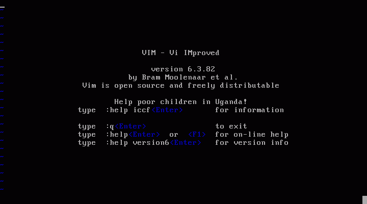
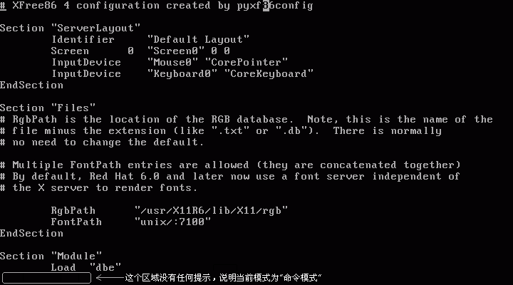

<<< 返回［预 习］索引
< vi 编辑器的使用方法 > （最近更新日：2006/08/30）
在UNIX下，vi是标准的文本编辑器之一。几乎任何一部UNIX系统都把vi编辑器作为最最基本的“软件”而被默认组装在系统中。在PC-UNIX中，即使是选择最小程度安装的系统，vi编辑器也会被默认安装在系统中。
提到vi，就不得不提一下UNIX下另一功能强大的编辑器 - Emacs 。好多人喜欢拿Emacs和vi来比较，但笔者认为，Emacs 和 vi 没有可比性。vi的轻量级特性，使得它成为系统管理方面的首选工具；而Emacs的功能强大的特性，使得它成为系统开发方面的首选工具。如果用Emacs 来做系统管理，它庞大的体积和对于系统资源的耗费（相对于vi），势必会影响系统管理的效率；然而，如果用vi来搞软件开发，它有些面向于开发的功能方面 的不完备，也势必会影响开发的灵活性。在这里，我们的目标是建立和管理一台服务器，所以，我们选择使用vi编辑器来完成服务器的配置工作。
由于本站所有服务器设置相关的修改工作，都是通过vi来完成的，所以准备通过本站介绍的各种方法构建服务器的话，请务必掌握vi的使用方法。否则将很难顺利的进行。如果您使用其它编辑器（比如Emacs）可以在安装过程中或通过yum命令在线安装。
习惯于Microsoft Windows下GUI方式编辑器的朋友，刚刚接触vi肯定会有“排斥反应”的，这一点只能奉劝稍安毋躁……当你习惯于vi之后，你会发现它既精确又有秩序，而且重要的是它对于要编辑的对象极富针对性。

上图为在CUI下输入“vi”命令后，vi被启动的状态。
或者输入一个已存在的文件的路径，来打开一个已经存在的文本文件。（这里以用root用户登录系统，后输入“vi /etc/X11/xorg.conf”为例。）
上图为用vi打开/etc/X11/xorg.conf后的状态。光标位于左上第一个字符下滑线的位置。
vi和其他编辑器最不一样的地方莫过于它把编辑、处理等等的操作分离开来，形成性质不同的3种操作模式，他们分别为“命令模式”、“插入模式”、“ex模式”。
在Windows下通常使用的记事本等等的编辑器在打开文件的时候，光标已经在处于输入等待的状态，也就是说，我们打开文件时就可以对文件进行编辑。 比如，我们要输入新的文本，或者复制一段文本，所有操作的前提，只要编辑器是被打开的状态，操作就是可能的。
但在vi下，为了增强对将要处理的文本的针对性，文本输入、复制等等不同的操作，是被分离开来的，比如文本输入的模式叫做“插入模式”，在插入模式 下，我们可以用和Windows下一样的操作方法来对文本进行输入、编辑等等的操作，但是复制等等非编辑的操作，在插入模式下不能够完成，而需要切换到相 应的模式下用相应的命令来完成。
在这里，还是首先对重要的vi的模式进行说明。
★ vi的模式（命令模式、插入模式、ex模式）
1）命令模式：
在我们刚刚通过vi新建或打开一个已经存在的文件时，首先默认被读取的模式就是“命令模式”，命令模式的特征就是，在编辑器窗口左下角的位置上没有任何的提示标语。

在这个模式下，如果不通过相应的命令，我们无法输入新的文本到这个文件中。这里建议新接触刚刚接触vi的朋友在用vi打开一个文件时不要处于心切而乱 按键盘试图输入一些文本到文件中，因为命令模式所谓的“命令”，并不是我们在命令行提时下输入的过程诸如“ls -> 回车”等等形式的命令。确切说vi命令模式下的命令，只是计算机键盘上的某个按键或某些按键的组合，当我们在命令模式下敲下键盘一个按键的时候，相应命令就已经被执行。
在这里，首先介绍移动光标的命令。通常光标的移动可以通过键盘右边的方向键，但是由于每次移动光标，手都要大幅度的移动到键盘右边，这样使用vi是体现不出效率的，所以建议使用vi固有的命令（键）来控制光标的移动。
光标的移动命令如下所示：
向右移动 --> l
向左移动 --> h
向下移动 --> j
向上移动 --> k |
如上所示，例如要向右移动光标8个字符的距离，只要在键盘上敲 l 键8次即可；向下移动3行的距离，只要在键盘上敲 j 键3次即可……也就是说，在vi命令模式中通过这几个键（命令）来控制光标的移动。
其次就是文本删除的命令。在Windows下大多数编辑器在删除文本时只要连续按[Backspace]键即可。但由于在vi中，插入模式和命令模式是分离开来的，所以在命令模式下需要通过命令（按键）来删除文本，而不是直接按[Backspace]键。
文本删除的命令如下所示：
删除光标所在位置的字符 --> x
删除光标所在的行 --> dd（敲 d 两次） |
如上所示，例如要删除从光标位置起向右的3个字符，只要在键盘上敲 x 键3次即可；要删除光标所在的行，只要敲 dd （连续敲d键两次），光标所在行的所有字符以及行将会被删除。
再次，当编辑完了一个文档，想要保存后退出的时候的命令为“ZZ”（大写、连续敲2次）。
保存并退出文档：
保存当前修改并退出 --> ZZ |
另外，vi还有一些编辑性质的命令，一并总结如下
具有编辑性质的有用的命令：
撤销上一步操作 --> u
移动光标到行首 --> 0 （数字0）
移动光标到行首 --> $
移动光标到当前页最顶行 --> H
移动光标到当前页最底行 --> L
向前翻一页（Page Up） --> Ctrl + f
向后翻一页（Page Down） --> Ctrl + b |
还有在服务器配置中使用vi时，频繁用到的就是vi的搜索功能。在vi命令行的状态下，键入“/”（斜 线）后，vi底部出现“/”，并处于输入等待状态，这时候输入要查找的文字或文字列，然后按回车就可以找到相应的文字或文字列。当有多个对象存在时，敲 “n”（小写）键为查找下一个目标，敲“N”为查找上一个目标。